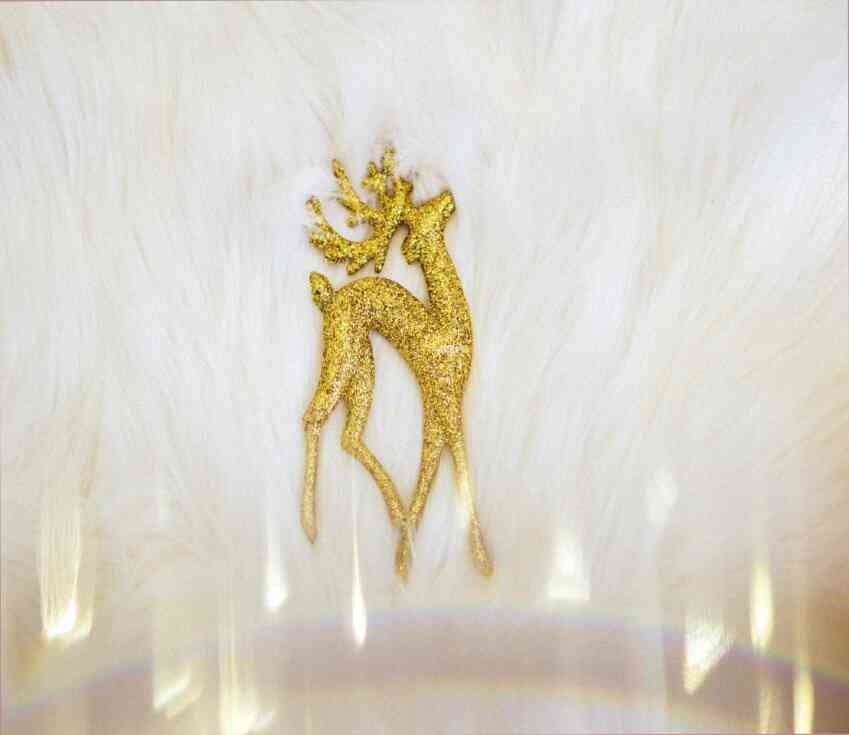
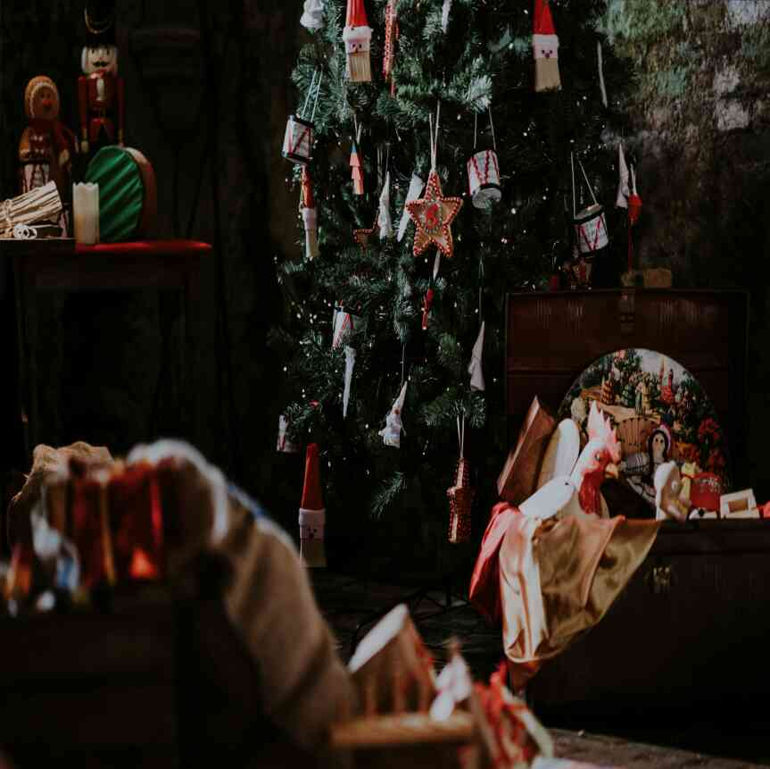

Статьи
-

Письмо от Деда Мороза
вот зимняя история, которую вы можете рассказать своим детям и внукам.В интернете можно найти множество рождественских елок, сделанны...
Читать далее -

Торт для вашего любимого человека
супер шоколадный торт, который будет радовать, я обещаю вам, что человек будет счастлив!Творог это очень вкусно, мне понадобится много-...
Читать далее -

У
меня есть рецепт пра-пра-бабушкиных сладких пирогов, от которых мне становится хорошо и не говоря уже о том, что они восхитительны. Баб...
Читать далее